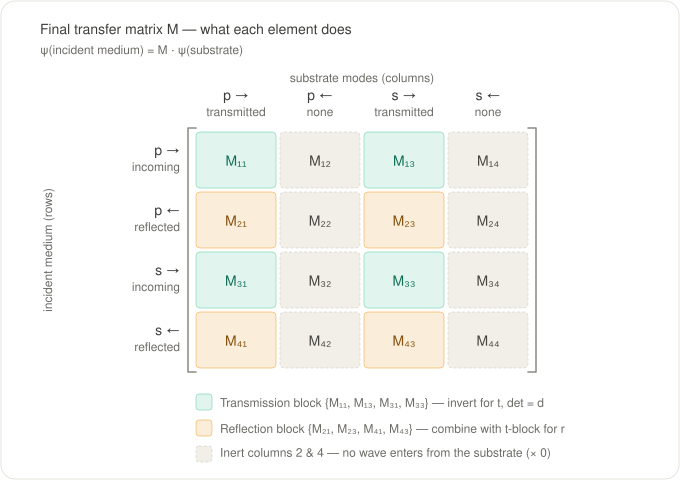
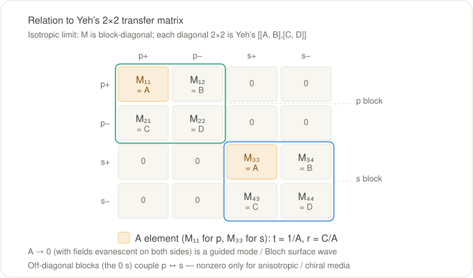
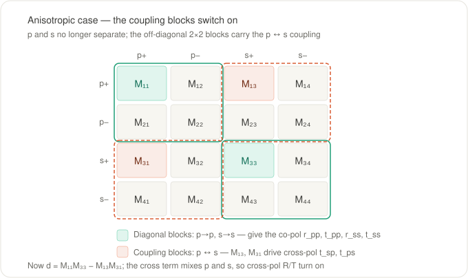

Anatomy of the transfer matrix
The method collapses an entire layered stack into a single $4\times4$ matrix, and every reflectance and transmittance number is read straight off it. This page explains what that matrix is and what each of its elements means.
transfer returns a TransferResult of $R$/$T$ values; the matrix itself is the first item returned by the internal TransferMatrix.propagate:
M, S, Ds, Ps, γs = TransferMatrix.propagate(1.0, layers; θ=0.3)
M # the 4×4 complex transfer matrix for the whole stackThis page calls the final transfer matrix $M$, matching Yeh (1979), whose per-polarization $2\times2$ matrix is the building block we map onto below. The source code calls the same object $\Gamma$ (specifically $\Gamma^*$ after reordering into Yeh's field convention) — it is the same matrix.
What the matrix represents
$M$ connects the four plane-wave mode amplitudes on the two sides of the stack:
\[\psi_\text{inc} = M\,\psi_\text{sub}, \qquad \psi = \begin{pmatrix} p^{+} \\ p^{-} \\ s^{+} \\ s^{-} \end{pmatrix},\]
where $+$ is the forward ($+z$) mode and $-$ the backward ($-z$) mode of each polarization. Rows index modes in the incident medium; columns index modes in the substrate. On the incident side the forward modes are the incoming wave and the backward modes are the reflected wave; on the substrate side the forward modes are the transmitted wave and the backward modes are absent — nothing illuminates the stack from behind.

Which elements carry the physics
Because the backward-substrate amplitudes are zero, columns 2 and 4 multiply zero and never affect an observable — only columns 1 and 3 act. The active elements split into two blocks.
Transmission block — rows $\{1,3\}$ × columns $\{1,3\}$. Its determinant is the shared denominator, and its inverse is the transmission Jones matrix:
\[d = M_{11}M_{33} - M_{13}M_{31},\]
\[t_{pp} = \frac{M_{33}}{d}, \quad t_{ss} = \frac{M_{11}}{d}, \quad t_{ps} = -\frac{M_{31}}{d}, \quad t_{sp} = -\frac{M_{13}}{d}.\]
Reflection block — rows $\{2,4\}$ × columns $\{1,3\}$, read out against the same transmission block:
\[\begin{aligned} r_{pp} &= \frac{M_{21}M_{33} - M_{23}M_{31}}{d}, & r_{ss} &= \frac{M_{11}M_{43} - M_{41}M_{13}}{d}, \\[4pt] r_{ps} &= \frac{M_{41}M_{33} - M_{43}M_{31}}{d}, & r_{sp} &= \frac{M_{11}M_{23} - M_{21}M_{13}}{d}. \end{aligned}\]
Reflectance is then $R = |r|^2$ directly, while transmittance $T$ is a Poynting-vector flux ratio rather than $|t|^2$ (the transmitted wave lives in a different medium) — see Physics Validation. These formulas are exactly what calculate_tr evaluates.
The full $16$-element map:
| Element | incident mode (row) | substrate mode (col) | appears in |
|---|---|---|---|
| $M_{11}$ | $p^{+}$ incoming | $p^{+}$ transmitted | $d$, $t_{ss}$, $r_{ss}$, $r_{sp}$ |
| $M_{12}$ | $p^{+}$ incoming | $p^{-}$ (absent) | — inert |
| $M_{13}$ | $p^{+}$ incoming | $s^{+}$ transmitted | $d$, $t_{sp}$, $r_{ss}$, $r_{sp}$ |
| $M_{14}$ | $p^{+}$ incoming | $s^{-}$ (absent) | — inert |
| $M_{21}$ | $p^{-}$ reflected | $p^{+}$ transmitted | $r_{pp}$, $r_{sp}$ |
| $M_{22}$ | $p^{-}$ reflected | $p^{-}$ (absent) | — inert |
| $M_{23}$ | $p^{-}$ reflected | $s^{+}$ transmitted | $r_{pp}$, $r_{sp}$ |
| $M_{24}$ | $p^{-}$ reflected | $s^{-}$ (absent) | — inert |
| $M_{31}$ | $s^{+}$ incoming | $p^{+}$ transmitted | $d$, $t_{ps}$, $r_{pp}$, $r_{ps}$ |
| $M_{32}$ | $s^{+}$ incoming | $p^{-}$ (absent) | — inert |
| $M_{33}$ | $s^{+}$ incoming | $s^{+}$ transmitted | $d$, $t_{pp}$, $r_{pp}$, $r_{ps}$ |
| $M_{34}$ | $s^{+}$ incoming | $s^{-}$ (absent) | — inert |
| $M_{41}$ | $s^{-}$ reflected | $p^{+}$ transmitted | $r_{ps}$, $r_{ss}$ |
| $M_{42}$ | $s^{-}$ reflected | $p^{-}$ (absent) | — inert |
| $M_{43}$ | $s^{-}$ reflected | $s^{+}$ transmitted | $r_{ps}$, $r_{ss}$ |
| $M_{44}$ | $s^{-}$ reflected | $s^{-}$ (absent) | — inert |
Isotropic limit: Yeh's 2×2 matrices
The field ordering $(p^{+}, p^{-}, s^{+}, s^{-})$ keeps the two p-modes adjacent and the two s-modes adjacent. So for isotropic (or optic-axis-aligned) media, where p and s do not mix, $M$ is block-diagonal, and each diagonal $2\times2$ block is Yeh's transfer matrix for that polarization:
\[\begin{pmatrix} A & B \\ C & D \end{pmatrix}, \qquad A = M_{11}\ (\text{p}), \quad A = M_{33}\ (\text{s}).\]
With no backward wave in the substrate, Yeh's relation gives $t = 1/A$ and $r = C/A$ — which is exactly the block formulas above specialized to $M_{13}=M_{31}=0$ (so $d = M_{11}M_{33}$, $t_{pp}=1/M_{11}$, $r_{pp}=M_{21}/M_{11}$, and likewise for s).

Bound modes and Bloch surface waves
A guided (bound) mode is a pole of $r$ and $t$ — a self-sustaining field with no incident wave — i.e. the denominator vanishes. In the decoupled case that is $A = 0$: $M_{11}=0$ for a p-polarized mode, $M_{33}=0$ for an s-polarized mode (in the full coupled problem it generalizes to $d=0$).
A Bloch surface wave (BSW) is the bound mode at the truncation of a periodic multilayer (e.g. a DBR). It lives inside a photonic band gap of the stack — so it decays into the periodic side — and below the light line of the outer cladding — so it decays into the cladding. To find one with this package:
- Use a high-index coupling prism as the incident (first) layer so that the in-plane wavevector $\beta = k_0\,\xi$ can exceed the cladding light line.
- Scan angle/wavelength with
sweep_anglepast the critical angle; the BSW appears as a sharp dip in the reflectance ($R_{pp}$ or $R_{ss}$) where $A$ passes through its zero. - Confirm it with
efield: the field is localized and strongly enhanced at the truncation surface.
Anisotropic and chiral media
When the media are anisotropic or chiral, p and s couple and the off-diagonal blocks switch on. The elements $M_{13}$ and $M_{31}$ drive the cross-polarized transmission ($t_{sp} = -M_{13}/d$, $t_{ps} = -M_{31}/d$), and the determinant picks up the cross term:
\[d = M_{11}M_{33} - M_{13}M_{31}.\]
That cross term ties the p and s poles together, so a bound mode at $d = 0$ is generally a mixed-polarization surface mode rather than a pure p or s one. The cross-polarization observables $R_{ps}, R_{sp}, T_{ps}, T_{sp}$ — exactly zero for isotropic media — become nonzero; this same coupling is what the Circular-polarization basis output reflects.
